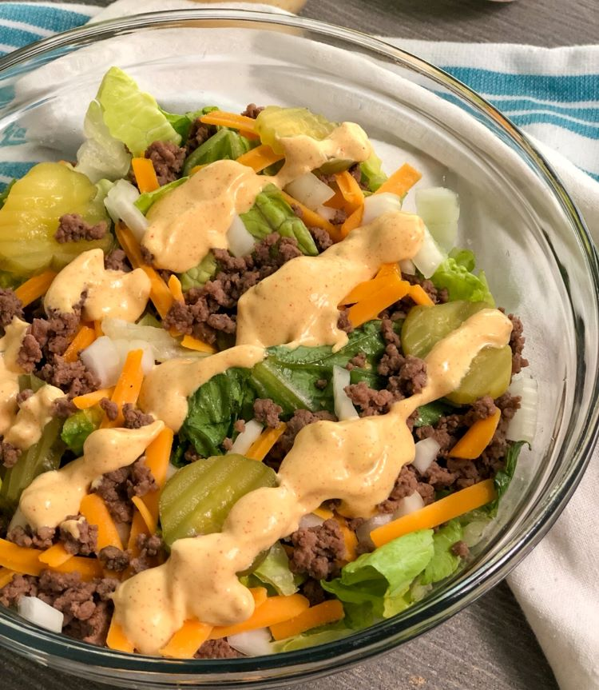

Big Mac Salad

Healthy delicious alternative
Ingredients serves four
Dressing
- 3/4 c mayo
- 4 tsp mustard
- 2 tbsp dill pickples chopped small
- 1 tbsp vinegar
- 1 tbsp minced onion
- 2 tsp honey
- 1/2 tsp paprika
Salad
- 1 lb ground beef (fancy alternative 1lb sliced steak)
- 2 romaine heads washed and chopped
- 1 sliced onion
- 1/4 c sliced dill pickles
- 1 c old fort cheese shredded
Instructions
- Mix mayo, mustard, dill pickles, vinegar, chopped onion, honey and paprika in a bowl until thoroughly combined. Refridgerate until ready to assemble salad.
- Heat 10 in saute pan over medium head. Add ground beef, cook until browned and no longer pink. Drain off fat
- If using steak, cook as per your liking, I prefer medium well done. Slice thinly
- Wash and chop lettuce. Slice onion in half and thinly slice. Rough chop dill pickles.
- When ready to serve, toss lettuce, onions, pickles and cheese
- Put salad mixture evenly into 4 bowls, place 1/4 of ground beef mixture into each bowl. If using steak divide steak evenly between 4 bowls. Drizzle with dressing and serve immediately.